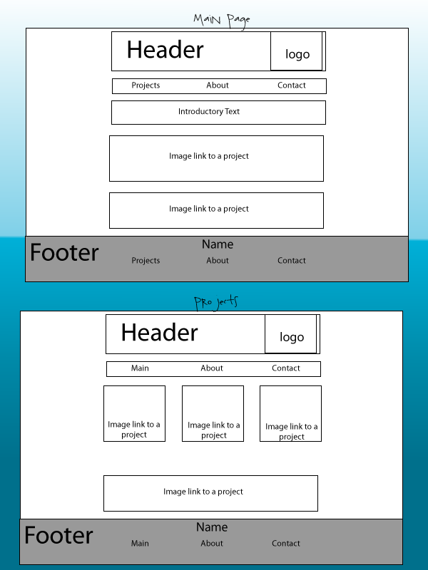
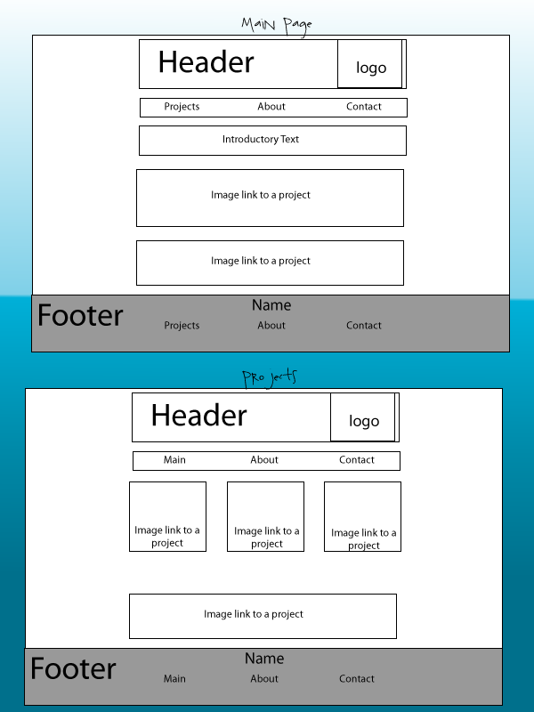

Laura Longworth
TC 349 Deliverables
Card Sort
My card sorting was done early in the semester so a lot of my layout has changed. I did want to have a separate page for each of my projects which I have implemented in my final site. I also designed a main page that would have image shortcuts to my projects but I redesigned my site without an opening page with just the logo.
Wireframe
My wire frame does look like the final site that I've completed.
Javascript
I added a Javascript that plays a button click sound when you click links from the main menu. I tried making the Javascript into its own file but it wasn't working. Sometimes the sound doesn't play but I think this is because the next page loads before the sound plays.
Final Design Comp
I tried to follow my final design composition however I removed the logo background from my main content because it proved to be more versitile to use a single color programmed into the HTML.I did add an extra logo to the footer.
 
